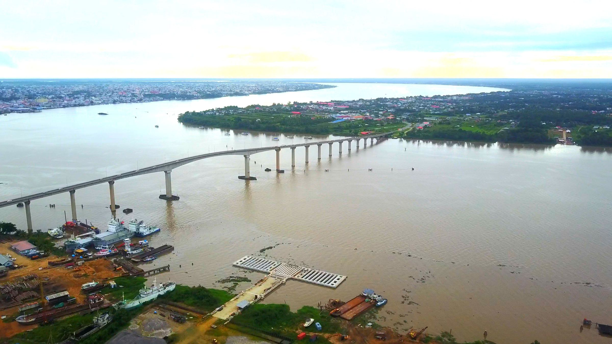
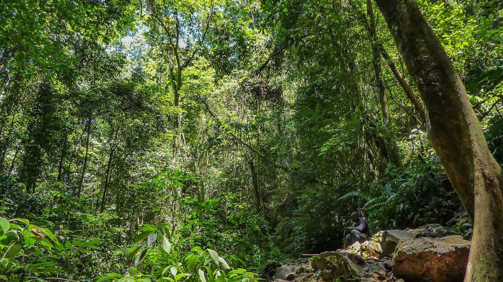
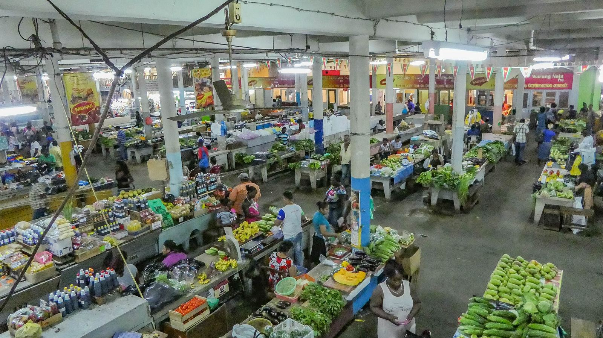
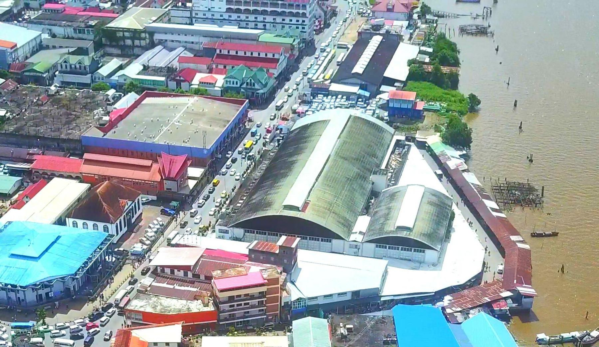
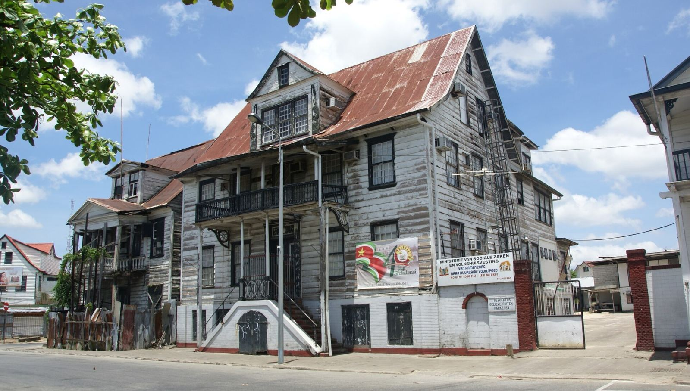
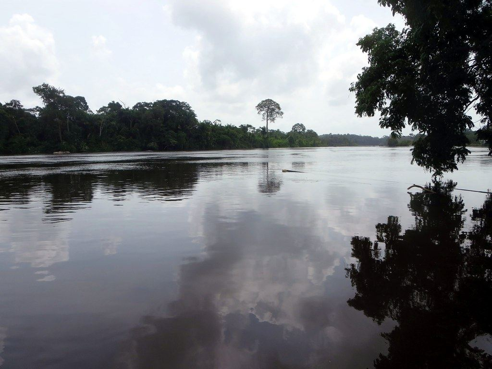
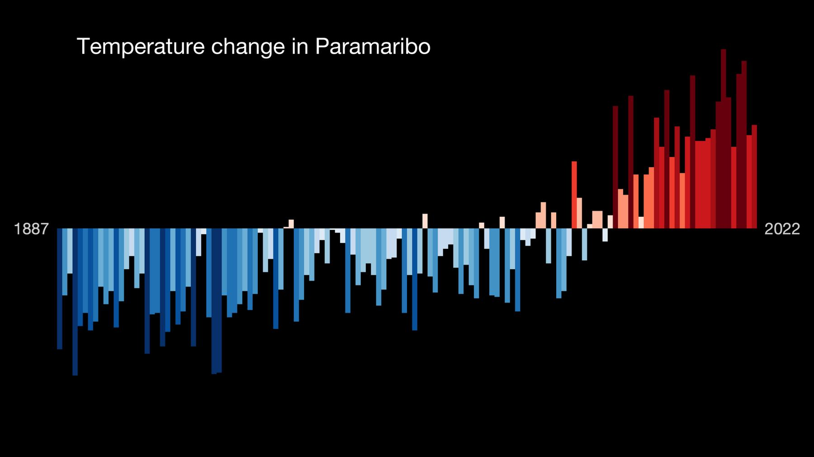
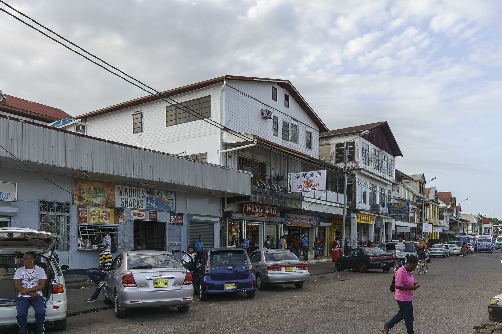
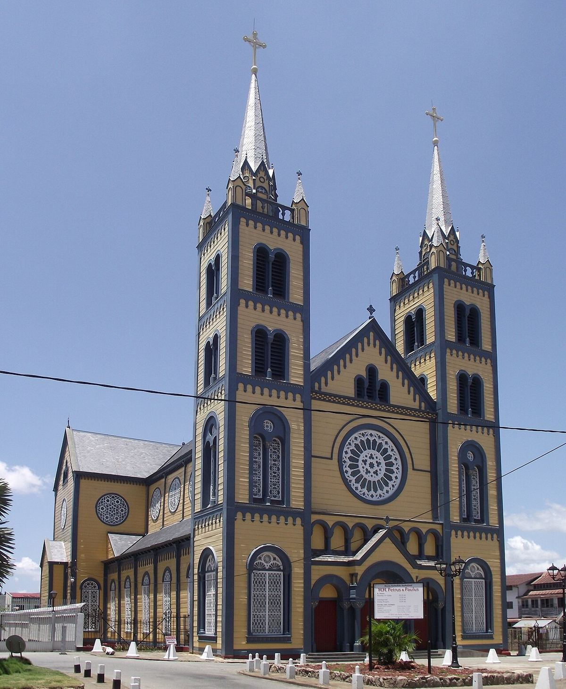

| PhotoFoto | TitleTitel | AuthorMaker | LicenceLicentie | SourceBron |
|---|---|---|---|---|
 | Jules Wijdenbosch Bridge.jpg | Sn.fernandez | CC BY-SA 4.0 | Wikimedia Commons |
 | Brownsberg jungle (33537733015).jpg | -JvL- from Netherlands | CC BY 2.0 | Wikimedia Commons |
 | Paramaribo market (33557504165).jpg | -JvL- from Netherlands | CC BY 2.0 | Wikimedia Commons |
 | Centrale Markt & Vreedzaam Markt.jpg | Sn.fernandez | CC BY-SA 4.0 | Wikimedia Commons |
 | Paramaribo - Waterkant 32 en 30 20161002.jpg | Otter | CC BY-SA 4.0 | Wikimedia Commons |
 | Upper Suriname River (14245407318).jpg | David Stanley from Nanaimo, Canada | CC BY 2.0 | Wikimedia Commons |
 | Show Your Stripes change in temperature graphic for Paramaribo, Suriname with bars.png | Professor Ed Hawkins | CC BY 4.0 | Wikimedia Commons |
 | Downtown Paramaribo (23659888656).jpg | Dan Sloan | CC BY-SA 2.0 | Wikimedia Commons |
 | Saints Peter and Paul Cathedral Paramaribo.jpg | Davidsoe (shifted by Rabanus Flavus) | CC BY-SA 4.0 | Wikimedia Commons |

.jpg){kind=link}
.jpg){kind=link}


.jpg){kind=link}

.jpg){kind=link}